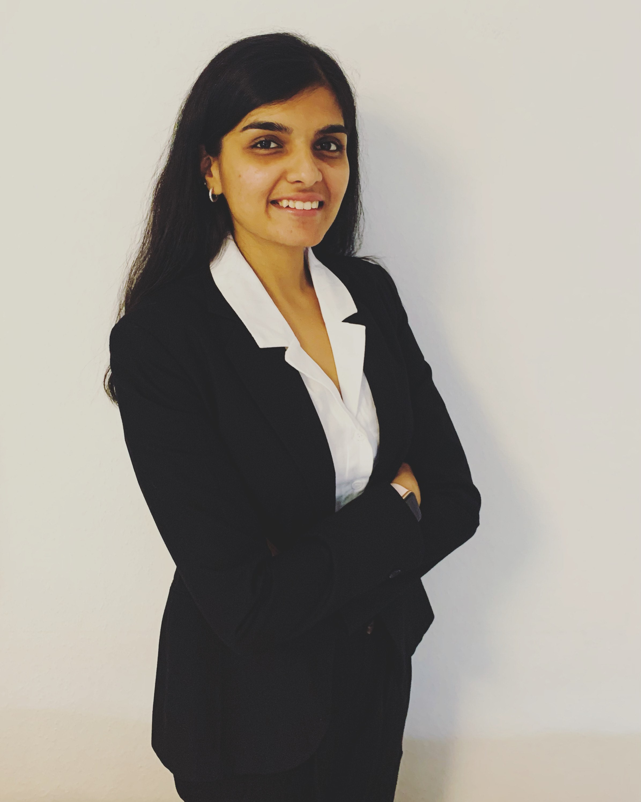

How to Design Observability Before You Buy It
DevOpsDays Zurich — Ignite Talk
Welcome
Technology Leader · Speaker · Community Builder · Writer
I help organisations build reliable technology, create meaningful communities, and communicate complex ideas with clarity.

With over a decade of experience in technology consulting, I've worked at the intersection of Site Reliability Engineering (SRE), Observability, AIOps, and IT Operations, helping organisations design systems that are resilient, scalable, and built for the future.
Outside of my professional work, I'm passionate about bringing people together. Whether it's organising community events, speaking at conferences, mentoring women in technology, or writing about life and leadership, I'm driven by curiosity and the belief that meaningful growth happens when people learn from one another.
This website is a collection of my professional journey, creative work, and the ideas I'm exploring along the way.
About Me
Growing up in India, I was always fascinated by understanding how things worked. That curiosity eventually became a career in technology, where I've spent more than ten years helping organisations solve complex operational and reliability challenges.
A few years ago, I moved to Germany to continue that journey. Living and working in a new country taught me just as much outside the workplace as it did within it. It strengthened my resilience, broadened my perspective, and inspired me to create spaces where people feel supported as they build their own careers.
Over the years, I've realised that my interests extend far beyond technology. I enjoy simplifying complexity—whether I'm designing an observability strategy, facilitating a workshop, speaking on stage, mentoring someone through a career decision, or writing about personal growth.
I believe technology is ultimately about people. Great systems, great teams, and great communities all share one thing in common: they are intentionally designed.
When I'm not working, you'll usually find me planning my next trip, training for a race, reading about psychology, writing poetry, experimenting with new ideas, or organising events that bring people together.
Career
For more than ten years, I've worked across technology consulting, platform engineering, and IT operations, helping organisations improve reliability, observability, and operational excellence.
Areas of expertise
Experience
Accenture · Hamburg, Germany
Diconium · Hamburg, Germany
BlackRock · Gurgaon, India
Certifications
Tools & technologies
Education
Manipal University, India
GPA 8.90/10 (German grade 1.37).
Throughout my career, I've enjoyed working where technology meets business strategy—helping teams ask the right questions before choosing tools, designing solutions that scale, and enabling organisations to make better engineering decisions.
I'm particularly passionate about making complex technical concepts accessible to both technical and non-technical audiences. Whether I'm facilitating workshops, advising leadership teams, or designing technology strategies, my goal remains the same: create clarity, build trust, and deliver sustainable solutions.
Public Speaking
Public speaking has become one of my favourite ways to learn, connect, and contribute to the technology community. I enjoy speaking about topics that bridge engineering, leadership, and systems thinking.

Recent Talks
DevOpsDays Zurich — Ignite Talk
In Development
I'm always excited to collaborate with conferences, meetups, podcasts, and organisations looking for engaging technical talks.
Community & Mentorship
One of the most rewarding parts of my journey has been creating opportunities for people to connect, learn, and support one another.
Founder of a non-profit for women in tech in Hamburg, grown to over 900 members since 2023 through networking events, workshops and mentoring initiatives.
Active mentor for women pursuing a career in tech via platforms such as CoffeeCodeBreak, supporting career transitions and growth.
Public speaker at global tech conferences—most recently DevOpsDays Zürich—making technical ideas approachable for practitioners and decision-makers alike.
I'm particularly passionate about supporting
Writing & Blogs
Writing has always been one of my favourite ways to make sense of the world. Sometimes I write about technology—breaking down concepts in observability, SRE, AI, and leadership. Other times, I write about the quieter moments: personal growth, identity, relationships, migration, creativity, and everyday life.
Read the blogOn this website you'll find
I hope my writing encourages curiosity, thoughtful conversations, and perhaps helps someone feel a little less alone in their own journey.
What Am I Into Now?
I love learning, and my interests continue to evolve. Right now, I'm particularly excited about exploring the connections between technology, people, and creativity.
I'm also working towards publishing a regular blog series, speaking at more international conferences, and continuing to build projects that bring together technology, communication, and human connection.
I'm open to speaking engagements, mentorship, community collaborations, and consulting conversations. The best way to reach me: